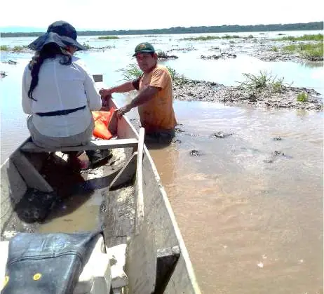
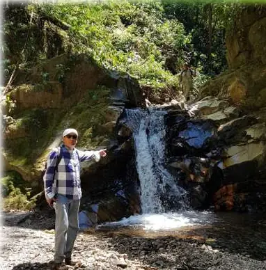
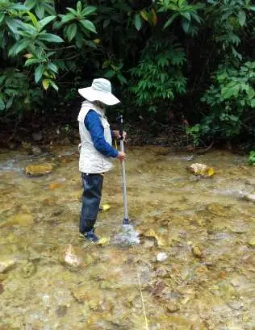

Agua
Navegación en el Lago Moa
Recorre los 16 km² del espejo de agua en bote, entre aves acuáticas, londras y caimanes.
Qué vivirás
Aventura, ciencia y cultura en un solo viaje. Cada actividad es guiada por miembros de la comunidad tacana.
Agua
Recorre los 16 km² del espejo de agua en bote, entre aves acuáticas, londras y caimanes.

Fauna
Acompaña los conteos nocturnos que realiza el Instituto de Ecología con linternas desde el bote.

Aventura
65 km de río amazónico entre playas, meandros y bosque ribereño hasta la entrada del lago.

Senderismo
Caminatas por las serranías de Tumupasa hacia cascadas de agua cristalina, como Dunucuawi.

Cultura
Cocina con las mujeres tacanas pescado en hoja de bijao y aprende a tejer con fibras del bosque.

Ciencia
Mide caudales, toma muestras de agua y revisa estaciones meteorológicas junto al equipo de la UMSA.
Estas experiencias se combinan en paquetes de 3 a 5 días.
Ver paquetes